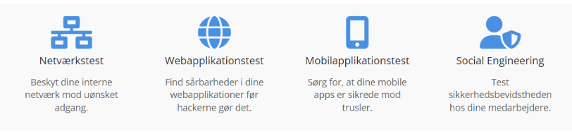
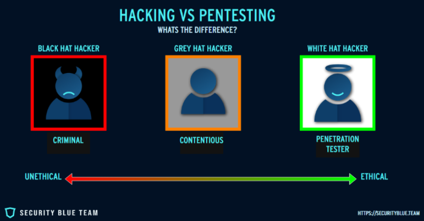
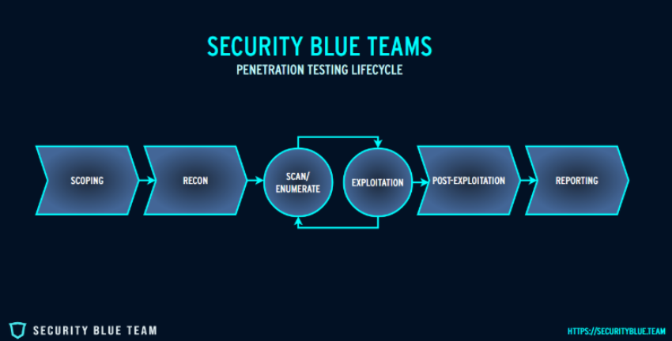
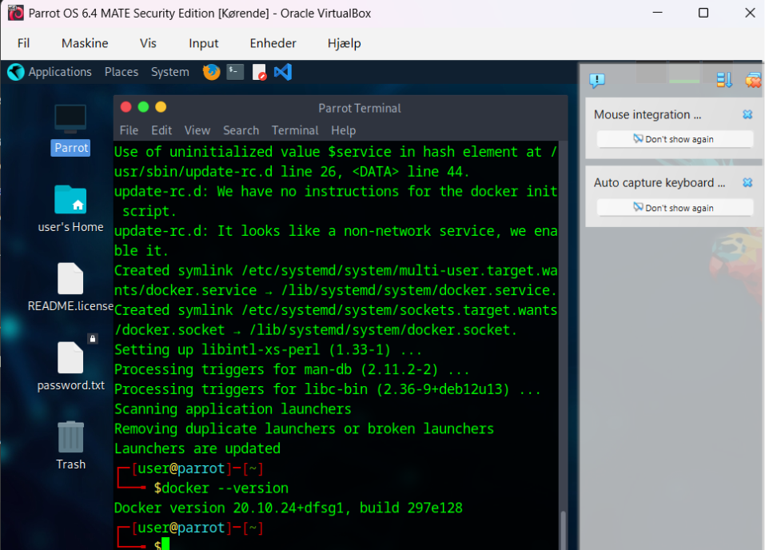
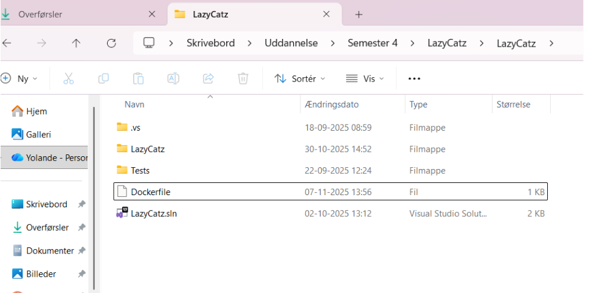
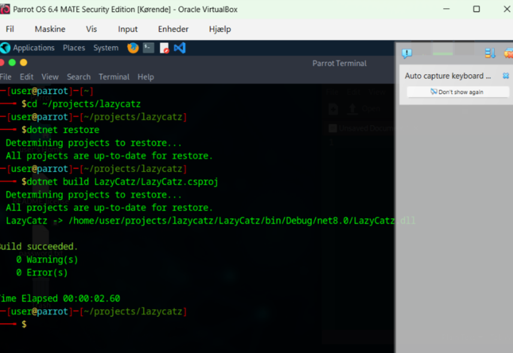
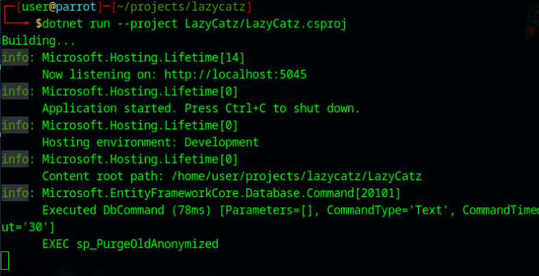

Persondata Beskyttelse og Penetrationstest
Fokus på datasikkerhed, GDPR-kompatibilitet og penetration testing af softwareprojekter for at sikre høj datasikkerhed.
Her kan du finde dokumenter vedrørende persondata-beskyttelse og GDPR i Lazy Catz:
Vi bruger oplysninger fra:
EU Databeskyttelse i henhold til GDPR
Analyse af cyberangreb, sårbarheder og sikkerhedstiltag for LazyCatz og KittyChat
Et cyberangreb er et bevidst forsøg fra en person eller gruppe på at bryde ind i, beskadige eller afbryde computersystemer, netværk eller digitale enheder, ofte til skadelige formål som datatyveri, spionage, økonomisk svindel eller systemangreb.
Hvad er et cyberangreb| Cyberangrebstype | Definition | Løsninger |
|---|---|---|
| Phishing / Social Engineering | Forsøg på at narre brugere til at afsløre følsomme oplysninger via falske e-mails, beskeder eller websider. | MFA for alle konti, medarbejderuddannelse. |
| Ransomware / Malware | Skadelig software der krypterer filer (ransomware) eller udfører skadelige handlinger (malware). | Regelmæssige backups, antivirus, netværkssegmentering, begrænsede privilegier. |
| DDoS | Overbelastning af server eller netværk med trafik for at gøre tjenester utilgængelige. | DDoS-beskyttelse, robust netværksinfrastruktur. |
| Man-in-the-Middle (MitM) | Angriber opsnapper og manipulerer kommunikation mellem to parter. | Kryptering (TLS), sikre netværk (VPN). |
| SQL Injection | Indsprøjtning af ondsindet SQL-kode i webformularer for at manipulere databaser. | Parameteriserede forespørgsler, WAF, pentests. |
| Cross-Site Scripting (XSS) | Indsprøjtning af skadelig kode i websider, som udføres i brugerens browser. | Output-encoding, CSP, inputvalidering, sikre skabeloner. |
| Insidertrusler | Skadelige eller uforsigtige handlinger fra interne brugere. | Begræns adgangsrettigheder og overvåg aktivitet. |
| Zero-Day-angreb | Udnyttelse af ukendte sårbarheder. | Regelmæssige opdateringer og patching. |
| Brute Force | Automatisk gætning af adgangskoder. | Begræns loginforsøg, stærke koder og 2FA. |
| Drive-By-Downloads | Uautoriseret download af malware fra inficerede hjemmesider. | Besøg kun sikre websteder, brug antivirus. |
| IoT-angreb | Angreb mod internetforbundne enheder med svag sikkerhed. | Opdater firmware, brug stærke adgangskoder. |
Læringskilder:
13 almindelige typer angreb og hvordan man forebygger dem
Top 10 Security Threats in 2025
ChatGPT
| Cyberangrebstype | Relevans | Løsninger og Forebyggelse |
|---|---|---|
| Phishing / Social Engineering | Falske e-mails til brugere eller ansatte for at stjæle adgangsdata eller API-nøgler. | MFA, uddannelse, e-mail-filtrering. |
| SQL Injection | Begge systemer gemmer data i databaser og kan derfor rammes. | Parameteriserede forespørgsler, ORM, pentests. |
| XSS (Cross-Site Scripting) | Kan udnyttes i chat eller formularer. | Output-encoding, CSP, inputvalidering. |
| DDoS | Kan lamme realtidskommunikation og webtrafik. | DDoS-beskyttelse, load balancing, skalerbar hosting. |
| Brute Force | Gætning af adgangskoder til systemer. | Rate limiting, stærke kodepolitikker, 2FA. |
Opsummering:
Begge bør implementere HTTPS, regelmæssige backups, penetrationstests og overvågning.
Projektet omfatter ikke MFA, antivirus, netværkssegmentering eller VPN endnu, men fokuserer på:
Oversigt over implementerede sikkerhedstiltag i applikationer og database:
| Sikkerhedstiltag | LazyCatz (MVC App) | KittyChat (FastAPI / LLM) | Azure SQL Database (lazycatzdb) |
|---|---|---|---|
| Regelmæssige backups | Stoler på Azure’s automatiske full/differential backups. | Ingen lokal data; afhænger af Azure backup. | Automatiske full, differential og log backups (geo-redundant). |
| Begrænset adgang | Kun admin via rollebaseret kontrol; sikre cookies. | API-key beskyttet; miljøvariabler anvendes. | Database-login med mindst mulige rettigheder. |
| DDoS-beskyttelse | Azure Front Door og Azure Monitor. | CORS og rate limiting på endpoints. | Azure DDoS Protection Standard. |
| HTTPS | HSTS aktiveret; HTTPS-redirect i Program.cs. | Kun HTTPS-kommunikation tilladt. | TLS-forbindelser aktiveret (Encrypt=yes). |
| ORM og SQL-sikkerhed | Entity Framework med parameteriserede kald. | Pyodbc med parameteriserede stored procedures. | Stored procedures beskytter mod SQL injection. |
| Input- og outputvalidering | ASP.NET DataAnnotations og HTML-encoding. | Pydantic-modeller og JSON-validering. | Validering i stored procedures. |
En penetrationstest (pentest) er et autoriseret, simuleret cyberangreb, der anvender specifikke teknikker til at identificere systemets sårbarheder med det formål at iværksætte sikkerhedsforanstaltninger, der beskytter systemet mod potentielle cyberangreb.
Formålet med en penetrationstest er at efterligne virkelige cyberangreb på en kontrolleret og autoriseret måde for at afdække svagheder i et system, før en reel angriber kan udnytte dem. Testen udføres ikke for at skade systemet, men for at forbedre dets sikkerhed og modstandsdygtighed.
Autoriseret: Ejeren af systemet har givet eksplicit tilladelse til, at testen må udføres, hvilket adskiller pentesten fra et egentligt cyberangreb.
Simuleret: Testeren anvender de samme metoder, værktøjer og tænkemåder som en hacker (ofte kaldet en “ethical hacker”), men uden ondsindede hensigter. Både manuelle teknikker og automatiserede værktøjer kan anvendes for at identificere sårbarheder.
Sårbarheder kan opstå på flere niveauer i et system:
Formålet er at finde disse svagheder, dokumentere dem og demonstrere, hvordan de potentielt kan udnyttes.
Efter testen modtager organisationen en rapport, som beskriver:
Dette giver virksomheden et handlingsgrundlag for at forbedre sin cybersikkerhed proaktivt.

Hvad er Penetration Test
Free Course - Introduction To Penetration Testing
Free Course - Introduction To Penetration TestingEn penetrationstest er en kontrolleret, realistisk og systematisk metode til at teste et systems sikkerhedsniveau. Den efterligner en angribers adfærd for at:
Den fungerer som et diagnostisk værktøj, hvor formålet ikke blot er at finde fejl, men at styrke den samlede cybersikkerhed.
Læringskilder:
13 almindelige typer angreb og hvordan man forebygger dem
Hvad er Penetration Test
Pentest og sårbarhedsscanning – opdag sikkerhedshuller
Hvad er pentesting?
Free Course - Introduction To Penetration Testing
Video - Penetration Testing Full Course 2025
ChatGPT
Der findes mange værktøjer til penetrationstest. De mest anvendte er:
| Tool | Kategori | Kort beskrivelse | Typisk brug / hvornår vælge |
|---|---|---|---|
| Nmap | Recon / Port scanning | Port- og serviceopdagelse, OS-detektion, scripting (NSE). | Initial netværkskortlægning og service-fingerprinting. |
| Masscan | Recon | Ekstremt hurtig portscanner til store IP-range. | Internet-skala hurtig scanning (følg op med Nmap). |
| Amass | Recon / OSINT | Subdomæne-opdagelse og DNS-intelligens. | Web-recon for at finde skjulte endpoints og assets. |
| Burp Suite | Web app pentest | Intercepting proxy, manuelle værktøjer, aktiv scanner (Pro). | Interaktiv web-app testning og exploit-validering. |
| OWASP ZAP | Web app pentest | Open-source proxy + automatiseret scanner. | Automatiserede web-scans / CI-integration; begynder-venlig. |
| sqlmap | Web app pentest | Automatiseret SQL-injection opdagelse og udnyttelse. | Målrettet SQLi opdagelse og payload-test. |
| Nikto | Webserver scanner | Scanner webservere for fejlkonfigurationer og kendte problemer. | Hurtig kontrol af webservere og konfigurationsproblemer. |
| Metasploit Framework | Exploitation | Modulært exploit-framework med payloads og post-moduler. | Proof-of-concept exploitation og levering af payloads. |
| Nessus / OpenVAS | Vulnerability scanning | Automatiserede sårbarhedstjek og rapportering. | Bred sårbarhedsdækning / compliance-scanning. |
| Wireshark | Packet analysis | Detaljeret pakkeinspektion og protokol-debugging. | Analyser netværkstrafik og detekter protokolproblemer. |
Lazy Catz er primært en web/HTTPS-applikation (ASP.NET MVC), hostet fra staging/cloud/VMs. KittyChat er en FastAPI-service med HTTP- og WebSocket-endpoints, hostet på server eller container.
Her anvender vi gray-box testing fordi:
Først vælger vi at anvende Parrot Security som operativsystem til penetrationstest, fordi det er en Linux-distribution designet til pentesting, digital forensics og sikkerhedsanalyse. Parrot kører i en virtuel maskine (VirtualBox), så vi kan teste programmer uden at påvirke host-systemet.
| Option | Hvad det er | Fordele | Ulemper / Hvornår vælge |
|---|---|---|---|
| Live | Bootbar ISO (USB/optisk eller installation) | Native ydeevne; god til peripherals/driver-test | Kræver reboot/installation; mindre praktisk til eksperimenter med snapshots. Bruges ved fysisk hardware eller maksimal ydeevne |
| Virtual | Forkonfigureret VM-image til VirtualBox/VMware | Hurtig opsætning; isoleret fra host; snapshots & rollback; ideel til lab/CTF | Lidt lavere ydeevne; afhænger af værtens ressourcer. Bruges til læring, øvelser eller isolerede tests |
| IoT | Letvægtsbuild til ARM/embedded (Raspberry Pi) | Optimeret til IoT; lavt ressourceforbrug | Ikke beregnet til almindelig pentesting; kun til ARM/Iot-tests |
Vi bruger Virtual-udgaven med option “Security”, fordi det giver en hurtig og sikker opsætning for pentesting.
| Funktion | VirtualBox | VMware Workstation Player/Pro |
|---|---|---|
| Licens | Gratis (open source / Oracle build) | Player gratis til ikke-kommerciel brug; Pro kræver licens |
| Import af Parrot (OVA) | Én-klik import; testet til VirtualBox | Fungerer, men netværksadaptere kræver ofte justering |
| Netværksopsætning | NAT / Host-Only enkel | Stærk, men interface-navne mere komplekse |
| Ydeevne | Lav RAM/CPU overhead | Generelt hurtigere I/O og grafik |
| Snapshots | Indbygget (gratis) | Kun i Pro-version |
| Integration med Windows-host | Delt udklipsholder, træk-og-slip (efter Guest Additions) | Bedre integration (delte mapper, copy/paste, display) |
Den første strategi fokuserer på at arbejde med container via Docker-image i Parrot VM.
Dette er blevet testet ved brug af Virtual Machine med ‘OWASP Juice Shop | OWASP Foundation’.
Efter download af VirtualBox og Parrot, skal Parrot VM køres i VirtualBox. Terminalen skal være åben i Parrot.
Opdater pakkelister og system i Parrot med:
sudo apt update && sudo apt full-upgrade -yLog ind i Docker med:
podman login docker.ioInstaller Docker med:
sudo apt install docker.ioDocker version 20.10.24+dfsg1 er nu installeret.

Pull OWASP Juice Shop image med:
sudo docker pull bkimminich/juice-shop:latestKør OWASP Juice Shop container med:
sudo docker run -d --security-opt seccomp=unconfined --security-opt apparmor=unconfined -p 4000:3000 --name juice-shop bkimminich/juice-shopDette bruger det officielle image fra Docker Hub, binder port 4000 på host og tillader adgang til visse /proc-indstillinger.
Applikationen kører nu på host på: http://10.0.2.15:4000/
Praktisk øvelse med vores MVC ASP .NET LazyCatz applikation.
For det første: opret Dockerfile i PowerShell i projektmappen hvor .sln filen ligger.

| Trin | Beskrivelse |
|---|---|
| Mount shared folder |
Opret mount point: sudo mkdir -p /mnt/lazycatzMount Windows-mappen ‘LazyCatzShare’: sudo mount -t vboxsf LazyCatzShare /mnt/lazycatzGå til mappen: cd /mnt/lazycatzls -la # skal vise LazyCatz.sln og LazyCatz/
|
| Byg Docker-image |
sudo docker build --security-opt seccomp=unconfined --security-opt apparmor=unconfined -t lazycatz:local .Alternativt med Podman: podman build -t lazycatz:local .Bemærk: Podman kan ikke anvendes her med visse /proc-tilladelser, derfor vælges Docker som alternativ. |
| Kør container | Bind port 4000:3000 og start containeren med Docker. |
LazyCatz køres direkte på Parrot VM uden container. Trin:
sudo apt update && sudo apt install -y dotnet-sdk-7.0cd ~/projects/lazycatzdotnet restore, dotnet build, dotnet run

Dette er langsomt, derfor anvendes Windows PowerShell med Docker som alternativ til pentest.
Forudsætninger:
Trin-for-trin vejledning:
cd "C:\Users\omamy\Desktop\Uddannelse\Semester 4\LazyCatz\LazyCatz"docker build -t lazycatz:local .docker run -p 8080:80 lazycatz:localdocker run -p 8080:80 -e ConnectionStrings__DefaultConnection="Server=...;User ID=...;Password=...;" lazycatz:localdocker run -p 5000:80 -e ASPNETCORE_URLS=http://+:80 -e ConnectionStrings__DefaultConnection="Server=lazycatz.database.windows.net;Database=lazycatzdb;User Id=cadmin;Password=laZycatp4sS!;TrustServerCertificate=True;" lazycatz:local